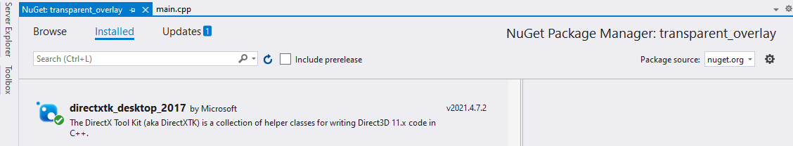
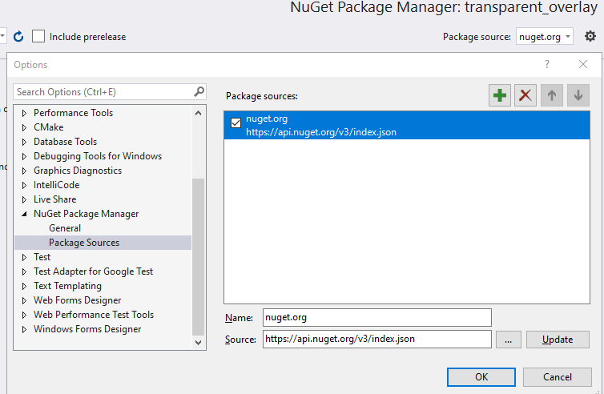

# DirectX 11
The DirectX 9 node will also have relevent info.
DirectX11 has a lot more going on that DirectX9. It's not as simple. And honestly kind of a pain.
•
https://github.com/stevemk14ebr/DX11Overlay - DirectX11 overlay window & draw line, text, box
•
https://www.unknowncheats.me/forum/direct3d/98728-d3d11-rendering-class.html•
https://gist.github.com/msmshazan/dfd5362004be37ff5e016b6a42be5083 - In C
•
https://www.unknowncheats.me/forum/d3d-tutorials-and-source/177926-direct3d-11-renderer.html - A Dx11 renderer
•
https://github.com/guided-hacking/GH_D3D11_Hook/blob/master/GH_D3D11_Hook/DllMain.cppThere are full-length tutorials available here (not simple):
•
https://github.com/walbourn/directx-sdk-samples/blob/master/Direct3D11Tutorials/Tutorial03/Tutorial03.cppVery useful tutorial including graphics debugging here:
•
https://www.unknowncheats.me/forum/2757228-post2.html## Setup
To makde drawing things easier, use the DirectXTK - DirectX Toolkit.
It's a collection of helper classes to make writing Directx11 code easier.
https://github.com/microsoft/DirectXTKInfo on installing can be found here:
https://github.com/microsoft/DirectXTK/wiki/Adding-the-DirectX-Tool-KitCreate your Visual Studio project then install it via the NuGet packages -
Project > Manage NuGet packagesYou want
directxtk_desktop_2017. Works fine as of June 2021.
Set the package source to
nuget.orgThat's it. Don't need any extra compiler settings.
Just include these headers.
Don't know if you need them all but whatever.
// DirectX Toolkit
#include "CommonStates.h"
#include "DDSTextureLoader.h"
#include "Effects.h"
#include "GeometricPrimitive.h"
#include "Model.h"
#include "PrimitiveBatch.h"
#include "ScreenGrab.h"
#include "SpriteBatch.h"
#include "SpriteFont.h"
#include "VertexTypes.h"
#include "SimpleMath.h"
NOTE:
I've only tested this for external drawing. Don't know about internal.
## DirectXTK
•
https://github.com/microsoft/DirectXTK/wiki/Line-drawing-and-anti-aliasing - Lines
### Text
Install font:
\MakeSpriteFont.exe "ProggyCleanTT" proggyclean.spritefont /FontSize:12Drawing text (also includes how to make fonts)
https://github.com/microsoft/DirectXTK/wiki/Drawing-text## Hooking
Hook locations:
•
Present() ◇ Or covertly, hook any of the functions that Present calls. You just want to draw inside of Present()
•
https://guidedhacking.com/threads/d3d11-x64-present-hook.15283/•
https://guidedhacking.com/threads/directx11-how-to-hook-direct3d11-draw-template.15252/ - More complete version of above
## Internal
•
https://github.com/rdbo/DX11-BaseHook/ - A good, clean example of hooking directx11 internally (uses ImGui)
•
https://github.com/stevemk14ebr/BF4-AtomBot/blob/master/BF4%20AtomBot/Menu/Rendering/DXTKRenderer.h - Grabs SwapChain and immediate context. Draws internally (draw line, draw box, etc.)
•
https://www.unknowncheats.me/forum/grand-theft-auto-v/348332-universal-imgui-d3d11-hook.html - ImGui dx11 hook
•
https://github.com/Rebzzel/kiero - Hooks d3d11
•
https://github.com/guided-hacking/GH_D3D11_Hook/blob/master/GH_D3D11_Hook/DllMain.cpp - Quite a large example of directx11. Uses vertex buffers and no DirectX toolkit
In some instances you'll save the current DirectX state, render, and then restore the state
to prevent graphical glitches when running internally.
ImGui does this.
•
https://www.unknowncheats.me/forum/playerunknown-s-battlegrounds/238561-drawing-line-messes.html•
https://www.unknowncheats.me/forum/1454080-post406.html